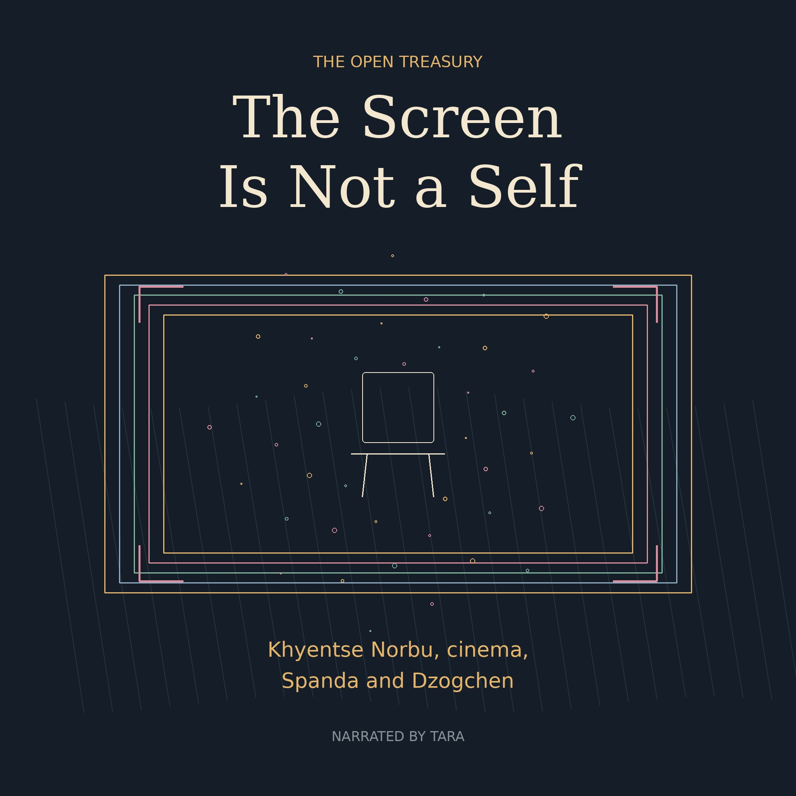

The Screen Is Not a Self
Khyentse Norbu, cinema, Spanda, and the responsibility of watching. The Cup and Travellers and Magicians meet conditioning, the spectator, and the difference between Shaiva recognition and Buddhist emptiness. Real interviews and teaching essays, official film synopses and identified criticism; our own interpretations and invented examples labeled. No claim of a fresh full film viewing.
A standalone companion to The Self Is the Dancer. Different traditions are not interchangeable. Ordinary facts, safety, suffering and present, revocable consent remain important.
Moving visual edition
Watch the original symbolic animation on YouTube
Chapters
- 00:00 - The Lama Wants a Television
- 02:58 - Poetry in Another Language
- 06:17 - The Right to Be an Ordinary Monk
- 09:14 - The Country That Will Save You
- 12:24 - A Story Inside the Story
- 15:31 - Spanda Is Not a Special Effect
- 18:30 - The Screen Is Not a Self
- 21:50 - Why Emptiness Is Not a Black Screen
- 25:03 - The Bad Version of This Teaching
- 28:02 - Beauty Can Be a Trap
- 30:52 - An Editor's Exercise, Not an Initiation
- 33:54 - When the Lights Come Up
Sources and complete script
Source, rights and audio notes
Complete spoken script
Rights and narration
Original critical educational commentary and synthetic Aoede narration, with short attributed third-party quotations. Original commentary, narration and animation CC0 only; quotations and source editions retain their rights. No blanket license over the combined recording. Not an authorized course by Dzongsar Khyentse Rinpoche, initiation, pointing-out instruction or attainment test. No film footage, stills, music, interview audio or likenesses.
Full automated wording comparison and targeted audio/name/join checks, not full human-ear or native pronunciation certification. One duplicate paragraph removed and two exact paragraphs repaired; manuscript wording unchanged. Specialist names approximate. Master -17.42 LUFS/-1.16 dBTP; MP3 -17.87/-1.35. Fixed gain and transparent peak limiting only; no EQ, pitch or speed change. Twelve original symbolic moving scenes. YouTube delivery copy 960x540/8fps with 48kbps AAC; original 1280x720/12fps video and full-quality podcast MP3 preserved.
Free without ads, paid access, sponsorship or support solicitation.
Got a question? Ask Tara - the best listener questions become short answer episodes.